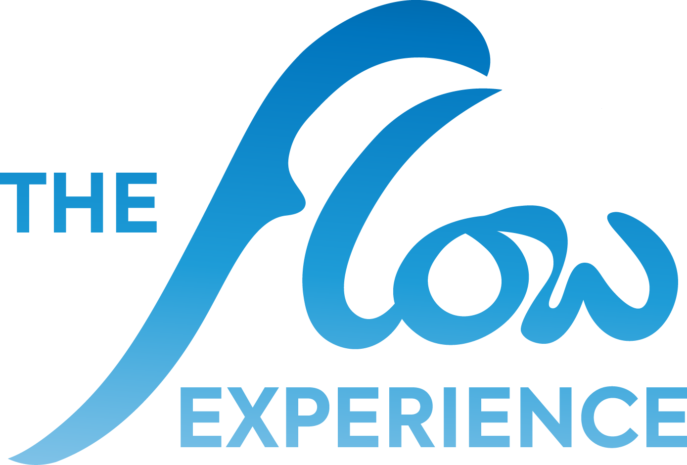

Calibrate
Bible Study · Word Formation
“There is no shortage of voices telling us what is true. Calibrate brings us back to what is true — God’s Word.”
What Calibrate Is
Truth does not begin with what we feel, assume or prefer. It begins with what God has said.
Calibrate is the Word Formation session of The Flow Experience — a time set apart to sit under God’s Word, discover what is true, and bring our beliefs and lives into agreement with it.
Founded on 2 Timothy 3:16–17, the goal of every session is to be equipped for every good work — not only for ministry but also for every sphere of life, because Christ is to be seen.
The Four Works of Scripture
“All Scripture is breathed out by God and profitable for teaching, for reproof, for correction, and for training in righteousness, that the man of God may be complete, equipped for every good work.”
2 Timothy 3:16–17 · ESV
These four works — teaching, reproof, correction, training — are the framework Calibrate returns to whenever we open the Word.
Select each work to explore how Scripture does it.
01 · Teaching
Truth is revealed
“Scripture does not finish its work when we understand it. It finishes when truth has reshaped the life.”
Our Calibration Path for 2026
Five Sessions, Five Truths, One Life.
Each year, Calibrate applies its permanent purpose to the areas of formation most needed in that season. For 2026, there are five sessions aimed at forming ministers who do not only understand surrender but live out surrender.
Session One
Trust Even in Darkness
Format · Small groups
In this session
A defining encounter
The response
Sources to mine critically — offered for study, not as endorsements.
The Monthly Progression
What Scripture forms in us, month by month.
Not five titles to complete, but five things we pray Scripture forms in us — trust, a truer sense of God’s goodness, honest recognition, a right view of cost, and faithful response.
“The goal is not only to know more of the Word. It is to become a people whose beliefs and lives agree with what God has said.”